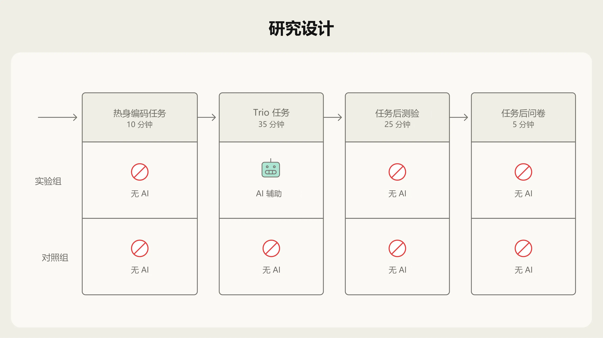
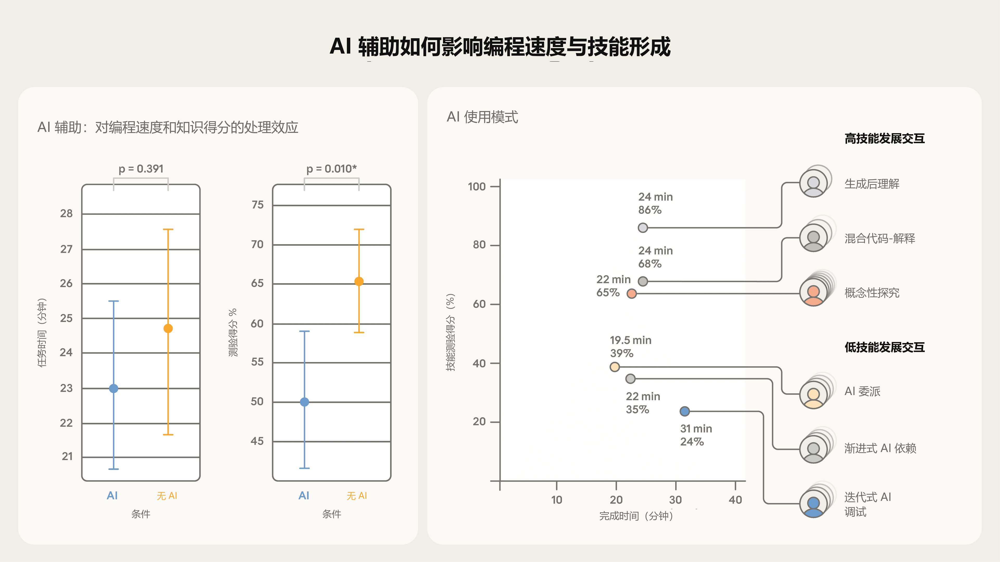

AI 辅助如何影响编程技能的培养
📖 中文摘要
专业术语注解
随机对照试验（randomized controlled trial）：把参与者随机分组成实验组和对照组以验证因果关系认知卸载（cognitive offloading）：把思考任务外包给外部工具（如 AI），减少自身认知投入调试（debugging）：找出并修复代码中错误的过程统计显著性（statistical significance）：结果不太可能由偶然因素造成的统计学判断监督（oversight）：人类检查、验证 AI 产出是否正确的能力📄 中文全文
- 分类： 对齐
- 来源： https://www.anthropic.com/research/AI-assistance-coding-skills
对齐
2026 年 1 月 29 日
阅读论文
研究表明，AI 能帮助人们更快地完成工作的某些部分。在一项对 Claude.ai 数据的观察性研究中，我们发现 AI 可以将某些任务提速 80%。但这种生产力的提升是否会带来代价？其他研究表明，当人们使用 AI 辅助时，他们对工作的投入度会降低，并减少投入其中的努力——换句话说，他们把思考外包给了 AI。
目前尚不清楚这种认知外包是否会阻碍人们在工作中成长技能，或者——就编程而言——理解他们正在构建的系统。我们最新的研究是一项以软件开发人员为参与者的随机对照试验，调查了在工作中使用 AI 的这一潜在负面影响。
这个问题具有广泛的影响——涉及如何设计促进学习的 AI 产品、工作场所应如何对待 AI 政策，以及更广泛的社会韧性等。我们聚焦编程，这是一个 AI 工具已迅速成为标准的领域。在这里，AI 制造了一种潜在的张力：随着编程变得更加自动化和加速，人类仍然需要技能来捕捉错误、引导输出，并最终为部署在高风险环境中的 AI 提供监督。AI 是否同时为_技能发展_和效率提升提供了一条捷径？还是 AI 辅助带来的生产力提升会削弱技能发展？
在一项随机对照试验中，我们考察了 1) 软件开发人员在有和没有 AI 辅助的情况下掌握一项新技能（此处为一个 Python 库）的速度；以及 2) 使用 AI 是否使他们不太可能理解自己刚刚编写的代码。
我们发现，使用 AI 辅助导致掌握程度的下降具有统计显著性。在一项涵盖他们几分钟前刚使用过的概念的测验中，AI 组的参与者得分比手写代码组低 17%，相当于将近两个字母等级。使用 AI 略微加快了任务速度，但这未达到统计显著性的阈值。
重要的是，使用 AI 辅助并不保证分数更低。某人_如何_使用 AI 会影响他们保留多少信息。掌握程度更强的参与者使用 AI 辅助不仅仅是为了生成代码，而是边做边建立理解——无论是通过提出后续问题、请求解释，还是在独立编码时提出概念性问题。
研究设计
我们招募了 52 名（大多数是初级）软件工程师，每个人都至少每周使用一次 Python，持续一年以上。我们还确保他们至少对 AI 编码辅助有一定熟悉度，并且不熟悉 Trio——我们任务所基于的 Python 库。 我们将研究分为三个部分：热身；主任务，包括使用 Trio 编写两个不同的功能（这需要理解与异步编程相关的概念，这是一项通常在专业环境中学习的技能）；以及一次测验。我们告诉参与者之后会有测验，但鼓励他们尽可能快地工作。 我们将编码任务设计为模仿一个人通过自导式教程学习新工具的方式。每位参与者都得到了一个问题描述、起始代码，以及解决它所需的 Trio 概念的简要说明。我们使用了一个在线编码平台，侧边栏有一个 AI 助手，它可以访问参与者的代码，并可以在任何被要求时生成正确的代码。¹

评估设计
在我们的评估设计中，我们借鉴了计算机科学教育研究，确定了四类常用于评估编程技能掌握程度的问题： * 调试（Debugging）：识别和诊断代码中错误的能力。这项技能对于检测 AI 生成的代码何时不正确以及理解其失败原因至关重要。 * 代码阅读（Code reading）：阅读和理解代码功能的能力。这项技能使人类能够在部署前理解并验证 AI 编写的代码。 * 代码编写（Code writing）：编写或选择正确代码编写方法的能力。随着 AI 编码工具的进一步集成，低级代码编写（如记住函数的语法）将不如高级系统设计重要。 * 概念性（Conceptual）：理解工具和库背后核心原理的能力。概念性理解对于评估 AI 生成的代码是否使用了符合库预期使用方式的适当软件设计模式至关重要。
我们的评估最侧重于调试、代码阅读和概念性问题，因为我们认为这些对于监督越来越可能由 AI 生成的代码最为重要。
结果
平均而言，AI 组的参与者大约快两分钟完成，尽管差异没有统计显著性。然而，测验分数存在显著差异：AI 组在测验中的平均分为 50%，而手写代码组为 67%——相当于将近两个字母等级的差距（Cohen's d =0.738，p =0.01）。两组之间分数差距最大的是调试问题，这表明如果 AI 阻碍了编程能力的发展，理解代码何时不正确以及为何失败的能力可能是一个特别值得关注的领域。

定性分析：AI 交互模式
我们特别感兴趣的是理解参与者_如何_完成我们设计的任务。在我们的定性分析中，我们手动标注了屏幕录制，以确定参与者花了多少时间编写查询、问了哪些类型的问题、犯了哪些类型的错误，以及花了多少时间主动编码。 一个令人惊讶的结果是参与者花在与 AI 助手互动上的时间之多。有几位参与者花了长达 11 分钟（占总分配时间的 30%）编写多达 15 个查询。这有助于解释为什么平均而言，使用 AI 的参与者完成得更快，尽管生产力提升没有统计显著性。我们预期，当 AI 用于重复性或熟悉的任务时，更可能显著提高生产力。 不出所料，无 AI 组的参与者遇到了更多错误。这些错误包括语法错误和 Trio 概念错误，后者直接映射到评估中测试的主题。我们的假设是，遇到更多 Trio 错误的参与者（即对照组）可能通过独立解决这些错误提高了他们的调试技能。 然后，我们按参与者与 AI 互动的方式对他们进行分组，识别出导致完成时间和学习结果不同的不同模式。 低分交互模式：低分模式通常涉及对 AI 的高度依赖，无论是通过代码生成还是调试。该组的平均测验分数低于 40%。他们表现出更少的独立思考，更多的认知外包。我们进一步将他们分为： * AI 委派（n =4）：此组的参与者完全依赖 AI 编写代码并完成任务。他们最快完成任务，过程中遇到很少或没有错误。 * 渐进式 AI 依赖（n =4）：此组的参与者开始时问一两个问题，但最终将所有代码编写都委托给 AI 助手。他们测验得分低，很大程度上是因为没有掌握第二个任务中的任何概念。 * 迭代式 AI 调试（n =4）：此组的参与者依赖 AI 调试或验证他们的代码。他们问了更多问题，但依赖助手解决问题，而不是澄清自己的理解。结果他们得分很低，完成两个任务的速度也更慢。
高分交互模式：我们认为高分测验模式是平均测验分数为 65% 或更高的行为。这些聚类中的参与者既将 AI 用于代码生成，也用于概念性查询。 * 生成后理解（n =2）：此组的参与者首先生成代码，然后手动将代码复制或粘贴到他们的工作中。代码生成后，他们向 AI 助手提出后续问题以提高理解。这些参与者使用 AI 时并不是特别快，但在测验中表现出更高水平的理解。有趣的是，这种方法看起来与 AI 委派组几乎相同，除了他们用 AI 来检验自己的理解。 * 混合代码-解释（n =3）：此组的参与者编写混合查询，既要求代码生成，也要求对生成代码的解释。阅读和理解他们要求的解释花了更多时间，但有助于他们的理解。 * 概念性探究（n =7）：此组的参与者只问概念性问题，依靠他们提高的理解来完成任务。虽然这组遇到了很多错误，但他们也独立解决了这些错误。平均而言，这种模式是高分模式中最快的，总体第二快，仅次于 AI 委派。
我们的定性分析没有在交互模式和学习结果之间建立因果联系，但它确实指出了与不同学习结果相关的行为。
结论
我们的结果表明，将 AI 积极融入工作场所，尤其是在软件工程方面，会带来权衡。这些发现强调，并非所有的 AI 依赖都是一样的：我们在追求效率的同时与 AI 互动的方式会影响我们学到多少。鉴于时间限制和组织压力，初级开发者或其他专业人士可能会为了尽快完成任务而依赖 AI，以牺牲技能发展为代价——尤其是当出现问题时的调试能力。 尽管是初步结果，但这些发现在公司向 AI 编写代码与人类编写代码比例更高的方向转变时，提出了重要的考量。如果初级工程师的技能发展因首先使用 AI 而受阻，生产力收益可能会以牺牲验证 AI 编写代码所需的技能为代价。管理者应该有意识地思考如何大规模部署 AI 工具，并考虑确保工程师边工作边继续学习的系统或有意设计选择——从而能够对他们构建的系统行使有意义的监督。 对于软件工程或任何其他行业的初学者来说，我们的研究可以看作一小部分证据，说明有意识地用 AI 工具发展技能的价值。认知努力——甚至痛苦地卡住——很可能对培养掌握程度很重要。这也是一堂适用于个人如何选择与 AI 合作、使用哪些工具的课。主要的 LLM 服务也提供旨在促进理解的学习模式（例如 Claude Code 学习与解释模式或 ChatGPT 学习模式）。了解人们使用 AI 时如何学习，也有助于指导我们如何设计它；AI 辅助应该使人类既能更高效地工作，_又能_同时发展新技能。 先前的研究在 AI 是帮助还是阻碍编程生产力方面发现了好坏参半的结果。我们自己的研究发现，AI 可以将完成某些工作任务的时间减少 80%——这一结果似乎与这里呈现的发现存在张力。但这两项研究提出了不同的问题，使用了不同的方法：我们早期的观察性工作衡量的是参与者已经具备相关技能的任务上的生产力，而这项研究考察的是人们在学习新东西时会发生什么。AI 既可能加速成熟技能上的生产力，也可能阻碍新技能的获得，尽管需要更多研究来理解这种关系。 这项研究只是揭示人类与 AI 协作如何影响工人体验的第一步。我们的样本相对较小，我们的评估在编码任务后不久测量了理解程度。即时测验表现是否能预测长期技能发展，是这项研究没有解决的一个重要问题。仍有许多未解答的问题，我们希望未来的研究能加以调查，例如 AI 对编程以外任务的影响，这种效应是否会随着工程师发展出更强的熟练度而纵向消散，以及在学习过程中 AI 辅助与人类辅助是否有区别。 最终，为了在 AI 存在的情况下容纳技能发展，我们需要对 AI 对工人的影响有一个更全面的认识。在 AI 增强的工作场所中，生产力收益很重要，但这些收益所依赖的专业知识的长期发展也同样重要。 阅读完整论文了解详情。
致谢 这个项目由 Judy Hanwen Shen 和 Alex Tamkin 领导。本博文的编辑支持由 Jake Eaton、Stuart Ritchie 和 Sarah Pollack 提供。 我们要感谢 Ethan Perez、Miranda Zhang 和 Henry Sleight 通过 Anthropic 安全研究员计划使这个项目成为可能。我们还要感谢 Matthew Jörke、Juliette Woodrow、Sarah Wu、Elizabeth Childs、Roshni Sahoo、Nate Rush、Julian Michael 和 Rose Wang 提供的实验设计反馈。
@misc{aiskillformation2026,
author = {Shen, Judy Hanwen and Tamkin, Alex},
title = {How AI Impacts Skill Formation},
year = {2026},
eprint = {2601.20245},
archivePrefix = {arXiv},
primaryClass = {cs.LG},
eprinttype = {arxiv}
}
脚注 1. 重要的是，这种设置不同于 Claude Code 等智能体编码产品；我们预期此类程序对技能发展的影响可能比这里的结果更显著。
相关内容
了解更多关于 Claude 数学能力的信息
Claude 的一个未发布研究版本在与黎曼猜想相关的问题上取得了进展。它改进了一个长期存在的下界：满足该猜想的黎曼 zeta 函数零点的比例，从 41.6% 提高到 67.2%。 阅读更多
用 Claude 发现密码学弱点
密码学算法。第一次攻击显著削弱了 HAWK——一种为未来量子计算机能够破解现有标准的时代而设计的数字签名方案。第二次攻击确定了一种攻击减轮 AES（使用最广泛的对称密码）的新方法。 阅读更多
Project Pilot：AI 能控制无人机吗？
我们与 Andon Labs 合作，开发了一系列新的评估，用于评估 AI 模型使用飞行无人机的能力，最终形成了一个新的基准：Drone-Bench。 阅读更多
▸ 英文原文（点击展开）
How AI assistance impacts the formation of coding skills
- Category: Alignment
- Source: https://www.anthropic.com/research/AI-assistance-coding-skills
Alignment
How AI assistance impacts the formation of coding skills
Jan 29, 2026
Read the paper
Research shows AI helps people do parts of their job faster. In an observational study of Claude.ai data, we found AI can speed up some tasks by 80%. But does this increased productivity come with trade-offs? Other research shows that when people use AI assistance, they become less engaged with their work and reduce the effort they put into doing it—in other words, they offload their thinking to AI.
It’s unclear whether this cognitive offloading can prevent people from growing their skills on the job, or—in the case of coding—understanding the systems they’re building. Our latest study, a randomized controlled trial with software developers as participants, investigates this potential downside of using AI at work.
This question has broad implications—for how to design AI products that facilitate learning, for how workplaces should approach AI policies, and for broader societal resilience, among others. We focused on coding, a field where AI tools have rapidly become standard. Here, AI creates a potential tension: as coding grows more automated and speeds up work, humans will still need the skills to catch errors, guide output, and ultimately provide oversight for AI deployed in high-stakes environments. Does AI provide a shortcut to both skill development and increased efficiency? Or do productivity increases from AI assistance undermine skill development?
In a randomized controlled trial, we examined 1) how quickly software developers picked up a new skill (in this case, a Python library) with and without AI assistance; and 2) whether using AI made them less likely to understand the code they’d just written.
We found that using AI assistance led to a statistically significant decrease in mastery. On a quiz that covered concepts they’d used just a few minutes before, participants in the AI group scored 17% lower than those who coded by hand, or the equivalent of nearly two letter grades. Using AI sped up the task slightly, but this didn’t reach the threshold of statistical significance.
Importantly, using AI assistance didn’t guarantee a lower score. How someone used AI influenced how much information they retained. The participants who showed stronger mastery used AI assistance not just to produce code but to build comprehension while doing so—whether by asking follow-up questions, requesting explanations, or posing conceptual questions while coding independently.
Study design
We recruited 52 (mostly junior) software engineers, each of whom had been using Python at least once a week for over a year. We also made sure they were at least somewhat familiar with AI coding assistance, and were unfamiliar with Trio, the Python library on which our tasks were based.
We split the study into three parts: a warm-up; the main task consisting of coding two different features using Trio (which requires understanding concepts related to asynchronous programming, a skill often learned in a professional setting); and a quiz. We told participants that a quiz would follow the task, but encouraged them to work as quickly as possible.
We designed the coding task to mimic how someone might learn a new tool through a self-guided tutorial. Each participant was given a problem description, starter code, and a brief explanation of the Trio concepts needed to solve it. We used an online coding platform with an AI assistant in the sidebar which had access to participants’ code and could at any time produce the correct code if asked.1
Evaluation design
In our evaluation design, we drew on research in computer science education to identify four types of questions commonly used to assess mastery of coding skills: * Debugging : The ability to identify and diagnose errors in code. This skill is crucial for detecting when AI-generated code is incorrect and understanding why it fails. * Code reading : The ability to read and comprehend what code does. This skill enables humans to understand and verify AI-written code before deployment. * Code writing: The ability to write or select the correct approach to writing code. Low-level code writing, like remembering the syntax of functions, will be less important with the further integration of AI coding tools than high-level system design. * Conceptual : The ability to understand the core principles behind tools and libraries. Conceptual understanding is critical for assessing whether AI-generated code uses appropriate software design patterns that adhere to how the library is intended to be used.
Our assessment focused most heavily on debugging, code reading, and conceptual problems, as we considered these the most important for providing oversight of what is increasingly likely to be AI-generated code.
Results
On average, participants in the AI group finished about two minutes faster, although the difference was not statistically significant. There was, however, a significant difference in test scores: the AI group averaged 50% on the quiz, compared to 67% in the hand-coding group—or the equivalent of nearly two letter grades (Cohen's d =0.738, p =0.01). The largest gap in scores between the two groups was on debugging questions, suggesting that the ability to understand when code is incorrect and why it fails may be a particular area of concern if AI impedes coding development.
Qualitative analysis: AI interaction modes
We were particularly interested in understanding how participants went about completing the tasks we designed. In our qualitative analysis, we manually annotated screen recordings to identify how much time participants spent composing queries, what types of questions they asked, the types of errors they made, and how much time they spent actively coding. One surprising result was how much time participants spent interacting with the AI assistant. Several took up to 11 minutes (30% of the total time allotted) composing up to 15 queries. This helped to explain why, on average, participants using AI finished faster although the productivity improvement was not statistically significant. We expect AI would be more likely to significantly increase productivity when used on repetitive or familiar tasks. Unsurprisingly, participants in the No AI group encountered more errors. These included errors in syntax and in Trio concepts, the latter of which mapped directly to topics tested on the evaluation. Our hypothesis is that the participants who encountered more Trio errors (namely, the control group) likely improved their debugging skills through resolving these errors independently. We then grouped participants by how they interacted with AI, identifying distinct patterns that led to different outcomes in completion time and learning. Low-scoring interaction patterns : The low-scoring patterns generally involved a heavy reliance on AI, either through code generation or debugging. The average quiz scores in this group were less than 40%. They showed less independent thinking and more cognitive offloading. We further separated them into: * AI delegation (n =4): Participants in this group wholly relied on AI to write code and complete the task. They completed the task the fastest and encountered few or no errors in the process. * Progressive AI reliance (n =4): Participants in this group started by asking one or two questions but eventually delegated all code writing to the AI assistant. They scored poorly on the quiz largely due to not mastering any of the concepts on the second task. * Iterative AI debugging (n =4): Participants in this group relied on AI to debug or verify their code. They asked more questions, but relied on the assistant to solve problems, rather than to clarify their own understanding. They scored poorly as a result, and were also slower at completing the two tasks.
High-scoring interaction patterns: We considered high-scoring quiz patterns to be behaviors where the average quiz score was 65% or higher. Participants in these clusters used AI both for code generation and conceptual queries. * Generation-then-comprehension (n =2): Participants in this group first generated code and then manually copied or pasted the code into their work. After their code was generated, they asked the AI assistant follow-up questions to improve understanding. These participants were not particularly fast when using AI, but showed a higher level of understanding on the quiz. Interestingly, this approach looked nearly the same as that of the AI delegation group, except for the fact that they used AI to check their own understanding. * Hybrid code-explanation (n =3): Participants in this group composed hybrid queries in which they asked for code generation along with explanations of the generated code. Reading and understanding the explanations they asked for took more time, but helped in their comprehension. * Conceptual inquiry (n =7): Participants in this group only asked conceptual questions and relied on their improved understanding to complete the task. Although this group encountered many errors, they also independently resolved them. On average, this mode was the fastest among high-scoring patterns and second fastest overall, after AI delegation.
Our qualitative analysis does not draw a causal link between interaction patterns and learning outcomes, but it does point to behaviors associated with different learning outcomes.
Conclusion
Our results suggest that incorporating AI aggressively into the workplace, particularly with respect to software engineering, comes with trade-offs. The findings highlight that not all AI-reliance is the same: the way we interact with AI while trying to be efficient affects how much we learn. Given time constraints and organizational pressures, junior developers or other professionals may rely on AI to complete tasks as fast as possible at the cost of skill development—and notably the ability to debug issues when something goes wrong. Though preliminary, these results suggest important considerations as companies transition to a greater ratio of AI-written to human-written code. Productivity benefits may come at the cost of skills necessary to validate AI-written code if junior engineers’ skill development has been stunted by using AI in the first place. Managers should think intentionally about how to deploy AI tools at scale, and consider systems or intentional design choices that ensure engineers continue to learn as they work—and are thus able to exercise meaningful oversight over the systems they build. For novice workers in software engineering or any other industry, our study can be viewed as a small piece of evidence toward the value of intentional skill development with AI tools. Cognitive effort—and even getting painfully stuck—is likely important for fostering mastery. This is also a lesson that applies to how individuals choose to work with AI, and which tools they use. Major LLM services also provide learning modes (e.g., Claude Code Learning and Explanatory mode or ChatGPT Study Mode) designed to foster understanding. Knowing how people learn when using AI can also help guide how we design it; AI assistance should enable humans to work more efficiently and develop new skills at the same time. Prior studies have found mixed results on whether AI helps or hinders coding productivity. Our own research found that AI can reduce the time it takes to complete some work tasks by 80%—a result that may seem in tension with the findings presented here. But the two studies ask different questions and use different methods: our earlier observational work measured productivity on tasks where participants already had the relevant skills, while this study examines what happens when people are learning something new. It is possible that AI both accelerates productivity on well-developed skills and hinders the acquisition of new ones, though more research is needed to understand this relationship. This study is only a first step towards uncovering how human-AI collaboration affects the experience of workers. Our sample was relatively small, and our assessment measured comprehension shortly after the coding task. Whether immediate quiz performance predicts longer-term skill development is an important question this study does not resolve. There remain many unanswered questions we hope future studies will investigate, for example the effects of AI on tasks beyond coding, whether this effect dissipates longitudinally as engineers develop greater fluency, and whether AI assistance differs from human assistance while learning. Ultimately, to accommodate skill development in the presence of AI, we need a more expansive view of the impacts of AI on workers. In an AI-augmented workplace, productivity gains matter, but so does the long-term development of the expertise those gains depend on. Read the full paper for details.
Acknowledgments This project was led by Judy Hanwen Shen and Alex Tamkin. Editorial support for this blog post was provided by Jake Eaton, Stuart Ritchie, and Sarah Pollack. We would like to thank Ethan Perez, Miranda Zhang, and Henry Sleight for making this project possible through the Anthropic Safety Fellows Program. We would also like to thank Matthew Jörke, Juliette Woodrow, Sarah Wu, Elizabeth Childs, Roshni Sahoo, Nate Rush, Julian Michael, and Rose Wang for experimental design feedback.
@misc{aiskillformation2026,
author = {Shen, Judy Hanwen and Tamkin, Alex},
title = {How AI Impacts Skill Formation},
year = {2026},
eprint = {2601.20245},
archivePrefix = {arXiv},
primaryClass = {cs.LG},
eprinttype = {arxiv}
}
Footnotes 1. Importantly, this setup is different from agentic coding products like Claude Code; we expect that the impacts of such programs on skill development are likely to be more pronounced than the results here.
Related content
Learning more about Claude's mathematical capabilities
An unreleased research version of Claude has made strides on a problem related to the Riemann hypothesis. It improved a longstanding lower bound for the fraction of zeros of the Riemann zeta function that satisfy the hypothesis, increasing it from 41.6% to 67.2%. Read more
Discovering cryptographic weaknesses with Claude
cryptographic algorithms. The first attack significantly weakens HAWK, a digital signature scheme that was built for a future world where quantum computers are able to break existing standards. The second identifies a new way to attack round-reduced AES, the most widely used symmetric cipher. Read more
Project Pilot: Can AI control a drone?
Working with Andon Labs, we’ve developed a new series of evaluations that assess AI models’ ability to use a flying drone, culminating in a new benchmark: Drone-Bench. Read more